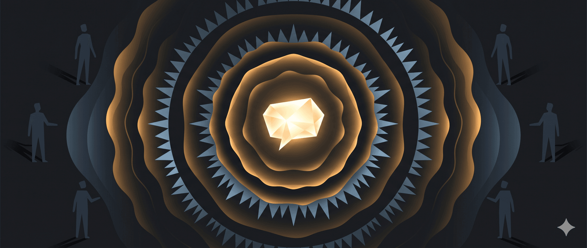

Đây là một bài nói dự thi trong chương trình Toastmaster. Tác giả là Kĩ sư Mohammed Qahtani, người Ả Rập Saudi. Ý nghĩa của bài nói này có thể tóm lược qua 3 thông điệp/bài học: (1) Lời nói có thể thay đổi suy nghĩ, hành vi, và cuộc đời một người; (2) Lời nói tích cực, khích lệ hiệu quả hơn sự chỉ trích hay đe dọa. Lời nói thấu hiểu và tôn trọng có thể thúc đẩy hành vi tích cực; và (3) Người được ngưỡng mộ cần cẩn trọng với lời nói, vì lời nói của họ có thể định hình niềm tin của người khác. Nên sử dụng ngôn từ để truyền cảm hứng và xây dựng một thế giới tốt đẹp hơn.
Mời các bạn thưởng thức bài nói chuyện do tôi lược dịch. Bảo đảm hay.
____
Câu chuyện mở đầu về thuốc lá và tiểu đường
[Giả bộ châm điếu thuốc]. Cái gì? Hay là các bạn nghĩ rằng hút thuốc là yếu tố giết người?
Để tôi nói cho các bạn một điều này: các bạn có biết rằng số người tử vong vì bệnh tiểu đường gấp 3 lần số người chết vì hút thuốc lá? Nhưng nếu tôi cầm một thanh kẹo Snicker, chẳng ai thèm lên tiếng.
Các bạn có biết rằng nguyên nhân số 1 của ung thư phổi không phải là thuốc lá, mà là DNA của bạn? Bạn có thể hút thuốc hàng năm trời mà chẳng hề hấn gì. Toàn bộ cuộc chiến chống lại thuốc lá chỉ là để hạn chế việc trồng thuốc lá mà thôi.
Thưa ông chánh chủ khảo cuộc thi! Quí thành viên Toastmasters thân mến, và thưa quí khách!
Tôi đã dùng những lập luận đó với một nhóm bạn, và kết quả: 5 người tin lời tôi nói, 2 người bắt đầu hút thuốc lá. Thật ra, tôi đã bịa đặt ra những lập luận đó!
Tôi muốn chứng minh rằng lời nói, khi được thốt ra và diễn đạt đúng cách, có thể thay đổi suy nghĩ của một người. Chúng có thể làm lung lay niềm tin của người nghe.
Bạn có sức mạnh để đưa một người từ đáy cuộc đời vươn lên thành công rực rỡ, hoặc phá hủy niềm vui của họ chỉ bằng lời nói.
Nghe có vẻ quá viển vông phải không?
Chỉ cần lựa chọn từ ngữ đơn giản có thể tạo nên sự khác biệt giữa việc người khác chấp nhận hay từ chối thông điệp của bạn. Bạn có thể có một điều tuyệt vời để nói, nhưng nếu dùng sai từ, nó sẽ tan biến ngay.
Bài học từ đứa con trai vẽ bậy lên tường
Tôi có một đứa con trai 4 tuổi, và nó có thói quen xấu là vẽ bậy lên tường bằng bút chì màu. Một buổi tối, tôi bước vào phòng nó, thấy nó đang hăng say vẽ vời.
Tôi quát lên: “Này, này! Con ngu ngốc à? Đừng bao giờ làm vậy nữa!” Và đoán xem chuyện gì xảy ra? Nó lại làm lần nữa.
Chẳng ai thích bị đe dọa. Chẳng ai muốn bị làm nhục. Lòng tự trọng của nó không cho phép điều đó. Nó làm vậy chỉ để chống đối tôi.
Một tuần sau, tôi lại bước vào phòng, và nó vẫn tiếp tục, lần này còn nhìn tôi với ánh mắt thách thức.
Tôi bình tĩnh, ngồi xuống và nói: “Con yêu, lại đây nào. Đừng làm vậy, con lớn rồi mà.” Và nó không bao giờ làm lại nữa, vì lòng tự trọng của nó muốn được là “cậu bé lớn”.
Vì sao thông điệp biến đổi khí hậu thất bại
Bạn có bao giờ tự hỏi tại sao chẳng ai quan tâm đến hiện tượng ‘hâm nóng toàn cầu’ (global warming )?
Dù đó là một vấn đề nghiêm trọng, có thể giết chết tất cả chúng ta. Khi bạn về nhà, bật TV lên và thấy một nhà khoa học nói về biến đổi khí hậu, và câu chuyện thường là như thế này:
[Nhái giọng] “Thưa quí bà và quí ông, như các bạn có thể thấy từ biểu đồ này, thống kê năm 2014 cho thấy mực nước biển đang dâng cao. Bảng này cho thấy khí thải CO2 và tầng ozone thứ ba đang ở mức báo động.”
Thông điệp đó chẳng bao giờ chạm đến ai. Nhưng quan trọng hơn, nếu bạn là một tấm gương được nhiều người ngưỡng mộ, một hình mẫu lí tưởng, thì bất kì điều gì bạn nói đều có thể được tin tưởng, bất kì lời nào bạn thốt ra đều có thể được coi là sự thật.
Câu chuyện đau lòng về Nasser
Bạn tôi, Nasser, anh ấy rất yêu thương và thần tượng ba mình, sẵn sàng làm mọi thứ để cho ông vui lòng. Nhưng thân phụ anh ấy là kiểu người khó hài lòng, năm này qua năm khác, Nasser cố gắng, và ông chỉ đáp lại “không”.
Năm đầu đại học, Nasser đạt toàn điểm A, và anh nghĩ đây sẽ là khoảnh khắc khiến thân phụ tự hào. Anh nhấc điện thoại, gọi cho ba: “Ba ơi, con được toàn điểm A! Ba có tự hào không? Chắc ba tự hào lắm, phải không?”
“Ừ, con nghe nè, ba bận lắm, ba bố gọi lại sau.”
“Bận lắm” – chỉ một câu đó đã phá tan tất cả. Nasser bắt đầu uống rượu, dùng ma túy, giao du với đám bạn xấu.
“Nasser, tại sao? Sao anh lại vứt bỏ cuộc đời mình?” Nếu người mà tôi yêu quí nhứt trên đời này không quan tâm, thì tại sao tôi phải quan tâm? Và một buổi tối, tôi nhận được cuộc gọi: Nasser đang trong phòng cấp cứu, vì quá liều ma túy.
Tôi lao vào bệnh viện, nhìn thấy anh ấy trên giường bệnh, nghe tiếng máy kêu bip, biiip, biiiiiiiip. Tôi thấy các bác sĩ cố gắng cứu anh ấy. “Sốc điện! [phììì] Sốc điện! [phììì] Sốc điện!” – rõ ràng rằng chỉ một lời nói đúng lúc có thể đã cứu được mạng sống của anh ấy.
Lời nói có sức mạnh. Lời nói chính là quyền năng. Lời nói có thể là võ khí của bạn.
Bạn có thể thay đổi một cuộc đời, truyền cảm hứng cho cả một dân tộc, và biến thế giới này thành một nơi tươi đẹp.
Không phải đó là điều tất cả chúng ta đều mong muốn sao? Chẳng phải đó là lí do chúng ta có mặt trong khán phòng này sao? Miệng bạn có thể phun nọc độc, hoặc có thể hàn gắn một tâm hồn tan vỡ.
Bản tiếng Anh
The Power of Words
[Pretending to light up a cigarette]
What? Or you all think smoking kills? Let me tell you something.
Do you know that the amount of people dying from diabetes are 3 times as many people dying from smoking? Yet, if I put a snicker bar, nobody would say anything.
Do you know that the leading cause of lung cancer is not actually a cigarette, it’s your DNA? You could smoke for years and nothing would ever happen to you. This whole war against smoking is just to restrict the farming of tobacco.
Mr. Contest Chair, fellow Toastmasters and guests, I use these arguments — even though I just made them up — with a group of my friends and the results: five of them believed what I said, two of them started smoking.
Words, when said and articulated in the right way, can change someone’s mind. They can alter someone’s belief. You have the power to bring someone from the slums of life and make a successful person out of them, or destroy someone’s happiness using only your words. Does that seem a bit too good to be true?
A simple choice of ‘word’ can make a difference between someone accepting or denying your message. You can have a very beautiful thing to say, but say it in the wrong words and [sssshhh] it’s gone.
I have a son who is four, and he had this bad habit of writing on the walls with crayons. And one evening I walked into his room and he’s going at it, just writing and drawing and so on.
And I said, “Hey, hey, hey! Are you stupid? Don’t you ever do that again?” And guess what happened. He did it again.
Nobody likes to be threatened. Nobody likes to be intimidated. His pride will not allow it. He did it again just to spite me. A week later, I walked into his room and again, he’s going at it and this time, he was even looking at me, just.
I came down, I said “Sweetie, come here. Don’t do that, you’re a big boy now.” And he never did it again, because his pride wants him to be ‘the big boy’.
Have you ever wondered why nobody cares about ‘global warming’? Even though it’s a very serious issue, it could kill all of us, because when you go home and you flip on the TV and you see a scientist trying to talk about global warming, it goes something like this.
[Imitating] “Ladies and gentlemen, as you can see from the graphs, that the statistics here – for 2014, it shows the water level is rising. This table shows that the mono-dioxide level and the third ozone layer, is at an alarming position.”
The message never get across, but most importantly, if you are a person who is a role model – if you’re a person who has been admired, anything you say could be believed, anything you utter could be taken as truth. My friend Nasser, he loved his father, idealized his father, he would do anything to make him happy, but his father was the kind of person who was not easy to impress and year after year Nasser tried and his father’s like ‘no’.
First year in college, Nasser have got straight A’s and he thought to himself this is it, this is what will finally make my dad proud. He picked up the phone, he called his dad, “Dad, I got straight A’s. Are you proud? Please tell me you are proud father.”
“Yeah, listen son, I’ll have to call you back, I’m busy.”
‘I’m busy’, was the single sentence that broke the Camel’s back. And he started drinking, doing drugs, hanging out with the wrong crowd. Nasser why? Why are you throwing your life away? If the one person in the world that I care about the most doesn’t care then, then why should I. And one evening I got the phone call, Nasser is in the emergency room, drug overdose.
I rushed to that hospital. I saw him on that bed and I saw that machine go beep, beeep, beeeeeeeep. And I saw doctors try to bring him back to life. Clear, [ssphhh] clear [sssphhh], clear [sssphhh] — it’s clear that a single word could have saved his life.
Words have power, words are power, words could be your power. You can change a life, inspire your nation and make up this world a beautiful place. Isn’t that what we all want it? Isn’t that why we are all in this hall? Your mouth can spit venom or it can mend a broken soul.
Source: https://singjupost.com/mohammed-qahtani-the-power-of-words-at-toastmasters-international-transcript
🔍 Phân tích bài viết
📌 Tóm tắt ý chính
Lời nói không chỉ là phương tiện giao tiếp — chúng là công cụ định hình thực tại. Mohammed Qahtani lập luận rằng cùng một thông điệp, nếu đóng gói bằng ngôn từ khác nhau, sẽ tạo ra phản ứng hoàn toàn trái ngược. Lời nói tôn trọng kích hoạt lòng tự trọng tích cực; lời nói đe dọa kích hoạt sự chống đối. Người có ảnh hưởng xã hội (hình mẫu, cha mẹ, lãnh đạo) mang trách nhiệm gấp bội vì lời họ nói dễ được tin tưởng vô điều kiện. Một câu nói thiếu quan tâm đúng lúc có thể phá hủy cả một cuộc đời.
🗺️ Mindmap
💡 Insight & Góc nhìn đa chiều
Lời nói là kỹ thuật đóng gói, không phải nội dung thuần túy. Qahtani chứng minh ngay trên sân khấu: ông bịa ra dữ liệu giả về thuốc lá, và khán giả tin. Điều đó nói lên rằng cách diễn đạt quan trọng hơn tính đúng đắn của thông tin — một sự thật đáng lo trong thời đại mạng xã hội, nơi misinformation lan truyền dễ hơn sự thật khô khan.
Vấn đề “global warming không ai quan tâm” thực ra là vấn đề thiết kế thông điệp. Khoa học dùng ngôn ngữ kỹ thuật → công chúng ngắt kết nối. Trong khi đó, một influencer 20 tuổi nói vài câu cảm xúc có thể thay đổi hành vi hàng triệu người. Đây là lý do truyền thông khoa học đang thua mạng xã hội không phải vì thiếu bằng chứng, mà vì thiếu storytelling.
Quyền lực lời nói phân phối không đều. Những người có nền tảng (cha mẹ, sếp, KOL, chính khách) có sức nhân bội: lời họ nói ít tốn công hơn mà tác động lớn hơn. Người bình thường cần nỗ lực gấp bội mới tạo được ảnh hưởng tương đương.
⚖️ Phản biện
Bài viết lãng mạn hóa quá mức. Không phải lúc nào lời nói tôn trọng cũng có tác dụng. Trong nghiên cứu tâm lý học hành vi (như của B.F. Skinner hay nghiên cứu về ABA), hành vi con người bị định hình bởi nhiều yếu tố: củng cố liên tục, môi trường, gen, không chỉ bằng một lần nói đúng từ.
Câu chuyện Nasser bị đơn giản hóa nhân quả. “Ba bận lắm” → nghiện ngập → cấp cứu là một chuỗi nhân quả quá gọn. Nghiện rượu và ma túy là bệnh lý phức tạp với nhiều yếu tố đóng góp (neurological, peer pressure, rối loạn tâm lý tiềm ẩn). Quy một câu nói là nguyên nhân duy nhất là sai về mặt lâm sàng.
Lý luận về thuốc lá ở đầu bài là con dao hai lưỡi. Qahtani dùng nó để chứng minh lời nói có thể thay đổi niềm tin — nhưng đây cũng là bằng chứng cho thấy kỹ thuật thuyết phục có thể bị dùng để thao túng. Bài không đề cập đủ mặt tối: cùng những kỹ thuật này, người ta có thể xây dựng cả.
❓ Câu hỏi mở
Nếu lời nói có sức mạnh tạo niềm tin giả (như thí nghiệm thuốc lá), thì làm thế nào để phân biệt khi nào mình đang bị thuyết phục bởi sự thật và khi nào đang bị thuyết phục bởi kỹ thuật đóng gói?
Trong các mối quan hệ quyền lực bất đối xứng (cha-con, sếp-nhân viên, thầy-trò), liệu lời nói tôn trọng một mình có đủ để bù đắp cho sự thiếu hiện diện về thời gian và sự chú ý không?
Tại sao các thể chế quyền lực (chính phủ, tập đoàn lớn) thường dùng ngôn ngữ kỹ thuật khô khan thay vì storytelling — vô tình hay cố ý tạo khoảng cách với công chúng?
🇻🇳 Liên hệ Việt Nam
Bài này ít liên quan trực tiếp đến kinh tế vĩ mô, nhưng có hai góc đáng chú ý:
Văn hóa giao tiếp công sở Việt Nam. Phong cách quản lý truyền thống ở nhiều doanh nghiệp VN vẫn nặng về chỉ trích, ít khen ngợi — phần vì quan niệm “khen nhiều sinh hư”. Nghiên cứu về employee engagement cho thấy tỉ lệ nhân sự chủ động nghỉ việc ở VN cao một phần vì môi trường feedback tiêu cực. Thay đổi văn hóa lời nói trong quản lý có thể trực tiếp tác động năng suất lao động.
Truyền thông chính sách công ở VN. Nhiều chính sách tốt (BHXH, biến đổi khí hậu, an toàn thực phẩm) thất bại không phải vì bản thân chính sách, mà vì thông điệp truyền đạt khô cứng, thiếu storytelling. Các chiến dịch tuyên truyền dùng số liệu và văn bản pháp quy thay vì câu chuyện người thật — đây là vấn đề thiết kế thông điệp, không phải vấn đề ngân sách.
📖 Giải thích thuật ngữ
Toastmasters International — Tổ chức phi lợi nhuận toàn cầu giúp người học kỹ năng nói trước đám đông và lãnh đạo. Hoạt động qua câu lạc bộ địa phương, thành viên luyện tập bằng cách diễn thuyết trước nhóm nhỏ và nhận feedback. Qahtani giành World Championship of Public Speaking 2015 từ tổ chức này.
Lòng tự trọng (Pride / Self-esteem) — Trong bài, dùng theo nghĩa cụ thể: người ta tuân thủ quy tắc không phải vì sợ phạt, mà vì họ muốn hình ảnh bản thân phù hợp với chuẩn mực đó. Đứa bé nghe “con lớn rồi” thì không vẽ bậy nữa — vì “cậu bé lớn” không làm thế.
Role model (Hình mẫu lí tưởng) — Người mà người khác nhìn vào để định hướng hành vi. Lời nói của họ được xử lý khác: não người nhận ít phản biện hơn, dễ chấp nhận hơn. Đây là cơ chế bị khai thác trong marketing, chính trị và cả thao túng tâm lý.